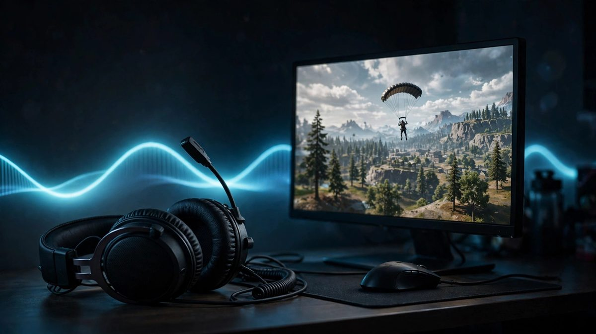

Best Audio Settings for PUBG: Hear Every Footstep

Sound is the most underrated sense in PUBG. A good player hears an enemy before seeing them: the footsteps on the floor above, the door opening two rooms away, the distant engine of a UAZ approaching the compound, the faint crack of a suppressed shot from the ridge. A player with bad audio settings hears none of that and walks into ambush after ambush, wondering how the enemy always knew where they were. The answer is usually simple: the enemy was listening, and you were not. Good audio settings cost nothing and improve your awareness immediately.
The Best In-Game Audio Settings
Start inside PUBG's own settings menu, under Audio. Set your Master Volume to 100 so the game delivers its full dynamic range, then use your headset or Windows volume to control how loud it actually sounds. Set the Music Volume to 0 or at most 10: the lobby and menu music adds nothing in a match and masks the sounds that matter. Set the Gameplay Volume to 100 and the UI Volume to around 30, so interface clicks never drown out a footstep. Turn on the "HRTF" option if your game version offers it, as it improves directional sound and helps you tell whether a footstep is in front of you, behind you or above you.
PUBG's audio is designed for stereo headphones, and enabling virtual surround sound in your headset software can make directional audio less accurate, smearing footsteps across the soundstage instead of placing them clearly left or right. Try stereo first.
Windows and Headset Setup
Your in-game settings only help if Windows is set up correctly. Set your headset's sample rate to 48000 Hz and 16-bit or 24-bit quality. Turn off Windows audio enhancements such as loudness equalisation and bass boost, because they compress the dynamic range and make quiet footsteps harder to hear. If your headset software has an equaliser, use a flat or slightly mid-boosted preset: footsteps live in the mid frequencies, so boosting bass makes explosions louder and footsteps quieter.
Choosing the right headset
- Use wired headphones or a wired headset when possible; Bluetooth adds latency that delays footsteps.
- Closed-back headphones block outside noise better than open-back ones.
- You do not need an expensive headset: a clear stereo headset beats a flashy surround headset with muddy audio.
- Make sure the headset sits comfortably for long sessions; discomfort makes you play worse.
What to Listen For
Good settings are only half the skill; the other half is knowing what the sounds mean. Footsteps are the most important sound in the game. They tell you how many enemies are nearby, how close they are, and whether they are above or below you. Footsteps on wood sound different from footsteps on concrete or grass, so you can often tell which room or floor an enemy is on. Running footsteps are louder than walking ones, and crouch-walking is almost silent, so an enemy who is sneaking up on you may make almost no sound at all.
Gunfire tells you the distance, direction and weapon type of a fight. A loud, sharp crack means the shooter is close; a dull thud means they are far away. Different weapons have distinct sounds: the Kar98K has a deep boom, the M416 a sharp rattle, and the AWM a heavy crack. Vehicles can be heard from hundreds of metres away, so an approaching engine is an early warning to take cover. Doors, breaking windows and grenade pins are all cues that tell you what an enemy is doing, if you are listening.
Using Sound in Fights
In a fight, sound is information. When you hear footsteps approaching a building, hold your angle and wait; the enemy has to come through a door or a window, and you know exactly where they will appear. When you hear an enemy healing or reloading, that is your moment to push, because they cannot shoot back for a few seconds. When you hear a vehicle, move to cover and wait for the occupants to get out, because a player exiting a vehicle is briefly vulnerable.
| Sound | What It Means | Your Response |
|---|---|---|
| Footsteps above you | Enemy on the floor above | Hold the stairs, aim up |
| Door opening nearby | Enemy entering your building | Take cover, pre-aim the door |
| Distant engine | Vehicle approaching | Move to cover, watch the road |
| Reloading sound | Enemy cannot fire for a moment | Push or peek now |
Frequently Asked Questions
Should I use surround sound or stereo for PUBG?
Stereo is usually better. PUBG's audio engine is built for stereo headphones, and virtual surround modes can blur the direction of footsteps. Try stereo first with HRTF enabled, and only experiment with surround if footsteps still feel hard to place.
Why can I not hear footsteps in PUBG?
The most common causes are a low master volume, music volume masking game sounds, Windows audio enhancements compressing the sound, or a Bluetooth headset adding delay. Set master volume to 100, music to 0, turn off enhancements, and use a wired headset. If footsteps are still quiet, check that your headset volume in Windows is at 100 percent.
Does crouch-walking really make you silent?
Almost. Crouch-walking is much quieter than walking and far quieter than running, which makes it the best way to move when you know an enemy is close. It is not completely silent at very close range, so move slowly and listen for the enemy's own footsteps while you sneak.
Download PUBG: Battlegrounds
Play free on PC or mobile — download the official game from the links below.